YY 麦序模式约 2012–2016 · 公会频道轮流上麦
困在屏幕里的人
—— 团播光鲜业态背后的生存褶皱
向下滑动，走进屏幕背后的世界
引言
凌晨三点，整座城市已经沉睡。但在写字楼的第18层，5个年轻人正对着摄影机，一遍又一遍地跳着相同的舞蹈。他们的脸被聚光灯照得苍白，双眼在镜头前努力保持明亮，尽管身体早已疲惫不堪。而这样的景象，正在无数城市上演着……
这就是团播，一个将无数年轻人的青春困在方寸屏幕之间的行业。
屏幕是他们的舞台，也是他们的牢笼。透过这块6英寸的玻璃，他们看见的是滚动的弹幕、跳动的礼物特效、不断变化的在线人数。但屏幕之外，是疲惫的身体、沙哑的喉咙、被合同捆绑的自由，以及一个关于暴富的梦——这个梦，99%的人醒来时发现自己两手空空。
当我们拿起手机，随手划过一个个团播直播间时，那一端的人们，正在经历怎样的人生？
第一章 舞台・屏幕亮起的团播世界
团播（Group Livestreaming），即多名主播在同一物理空间或通过连麦技术，在主持人的控场下进行的集体直播表演。团播并非当下的新兴产物，它经历了从YY时代的“公会频道”，到映客时代的“多人连麦”，最终在抖音、快手等短视频平台演变为成熟的“女团/男团”流水线模式。观众通过打赏决定主播排名及PK结果，形成“直播打赏+粉丝经济”的复合模式，情绪、注意力与金钱在流水线运作中源源不断地被生产。
映客连线模式约 2016 · 单人连线 → 双人连线，多人同屏雏形出现
团播并非我国独有的现象，它的源头可以追溯到韩国和美国的游戏直播平台。
世界团播发展时间线 (2016-2026)
将鼠标悬停在节点上，查看阶段详情
数据来源：行业公开资料整理
当坐拥10亿用户的庞大短视频流量池遇上成熟的直播消费文化，市场又恰好拥有足够低的人力成本，团播最终在中国演化出了全球最为极致的形态。
根据中国演出行业协会（CAPA）统计及相关平台的财报披露，中国团播市场在2023至2025年间经历了爆发式增长。短短三年间，团播账号数量翻了近三倍，日活用户突破4800万，打赏总额则从180亿元一路攀升至720亿元。这意味着到2025年，中国团播市场每天产生的流水已接近2亿元。每一个深夜，都有价值两亿元的虚拟礼物在屏幕上绚烂绽放。
0
2025 年全年打赏总额，日均流水近 2 亿元

第二章 风口・快速扩张的团播产业
屏幕亮起的地方，从来不只有主播和观众。聚光灯之外，一套庞大的产业系统正在高速运转。直播间正在从一个房间转变成流量、资本与技术交汇的节点。当越来越多的人涌入这条赛道，一场前所未有的扩张也随之开始。
当直播变成流水线：团播凭什么跑赢单人？
将团播与传统单人直播进行对比可以发现，得益于多人协作和连续互动机制的存在，团播能够持续制造新的内容刺激观看者，因而在内容丰富度、用户观看时长、互动强度以及付费转化能力等维度全面领先于传统单人直播。与此同时，同样的人力投入条件下，团播往往能够创造出数倍于单人直播的内容产出和商业回报。


01
团播通过多人协作实现内容的连续供给和规模化生产，即使个别主播离场，整个直播系统依然能够持续运转，摆脱了对个体明星状态的高度依赖。
02
多主播之间的竞争与合作不断制造新的直播事件，使观众从单纯的观看者变成关系网络中的参与者，显著提升停留时长和付费意愿。
03
对平台和 MCN 而言，团播最大的价值在于高度标准化与可复制性——可复制的主播让直播如流水线般稳定量产。
城市的屏幕地图：团播为何扎堆在这些地方？
团播产业并没有像短视频用户那样均匀分布在全国，而是迅速向少数几个城市聚集，形成明显的梯队结构。杭州、成都和长沙构成第一梯队，广州、北京、深圳等城市紧随其后，而武汉、西安、郑州等地则成为近几年快速崛起的新节点。
在这张地图上，杭州无疑是最耀眼的中心。依托成熟的直播电商生态和丰富的平台资源，杭州聚集了全国数量最多的团播 MCN 机构。九堡、滨江和余杭的写字楼里，密集分布着大大小小的直播基地。从某种意义上说，杭州之于团播，就像深圳之于电子制造业。
如果说平台算法决定了流量流向哪里，那么城市则决定了主播会出现在哪里。团播产业的地理分布，本质上也是流量、人才、资本与成本之间不断博弈的结果。


第一梯队
杭州、成都、长沙——内容生产中心与规则输出地，聚集度最高。
第二梯队
广州、北京、深圳——依托平台资源、供应链与跨境电商优势。
新兴节点
武汉、重庆、西安、郑州——劳动力与成本洼地，扩张下一站。
流量背后的算盘：平台、机构与主播的三角博弈
团播的商业模式看似简单，但其内部的分成结构、运营逻辑和激励设计，构成了一套精密运转的利益分配机器。这台机器每一层的设计都经过了反复优化，优化的目标只有最大化从用户到平台的现金流转效率。主播在这条链路上，既是生产者，也是产品本身。
你是一位来自四线城市、高中学历的 20 岁女生。
某天，你在招聘软件上频繁刷到某类信息：
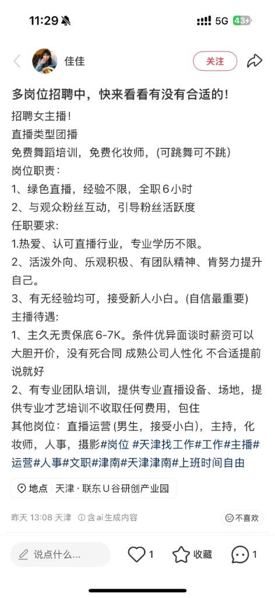
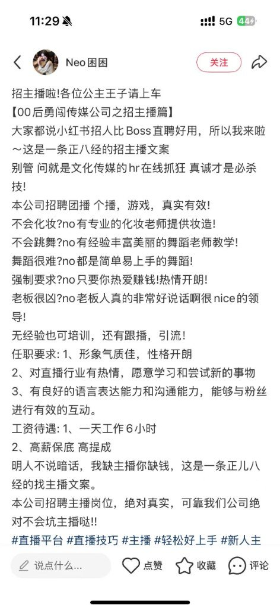
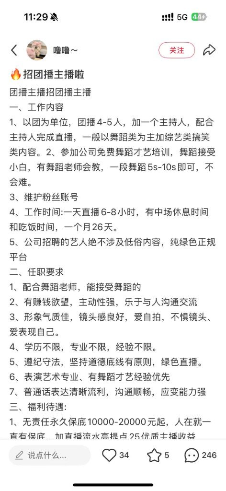
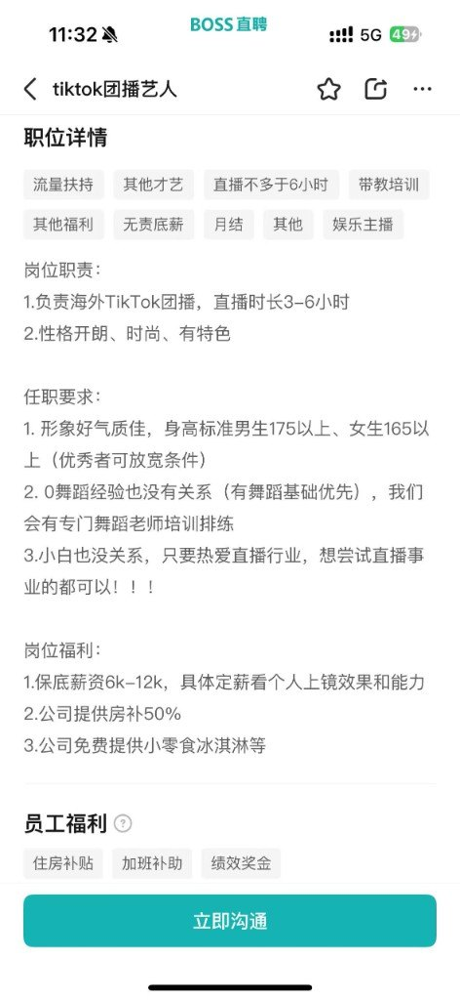
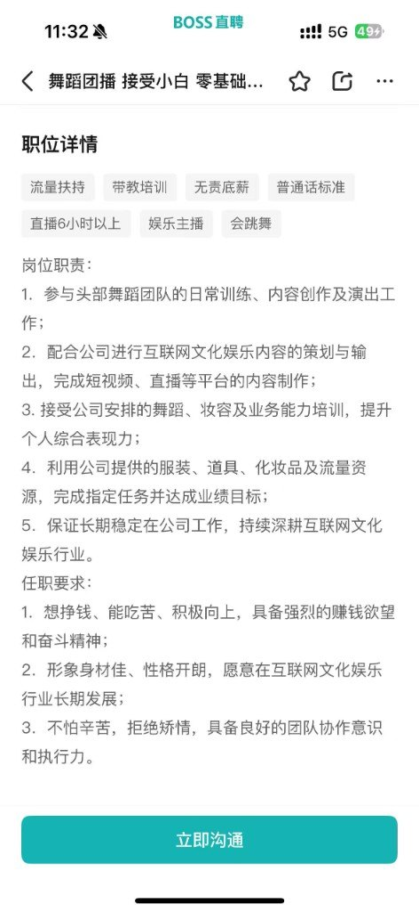
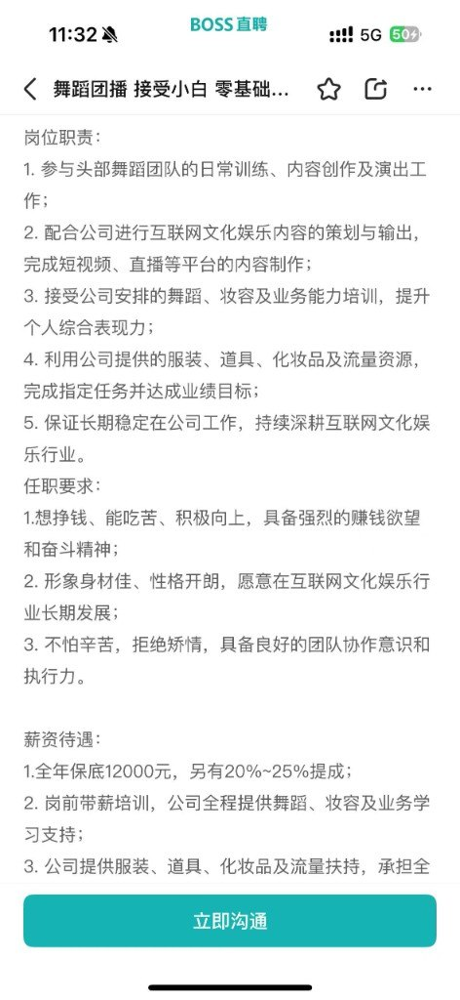
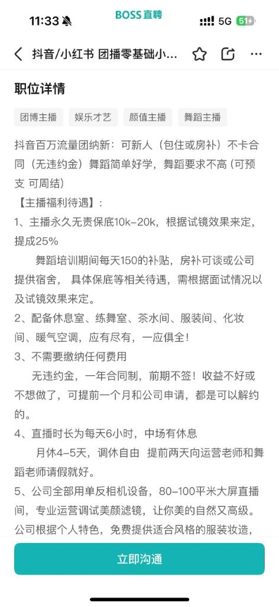
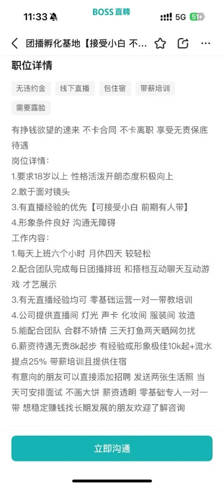
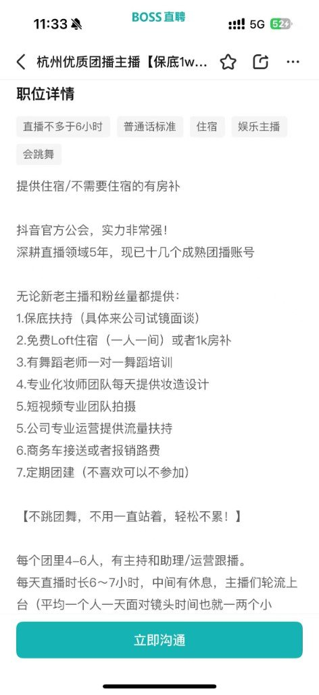
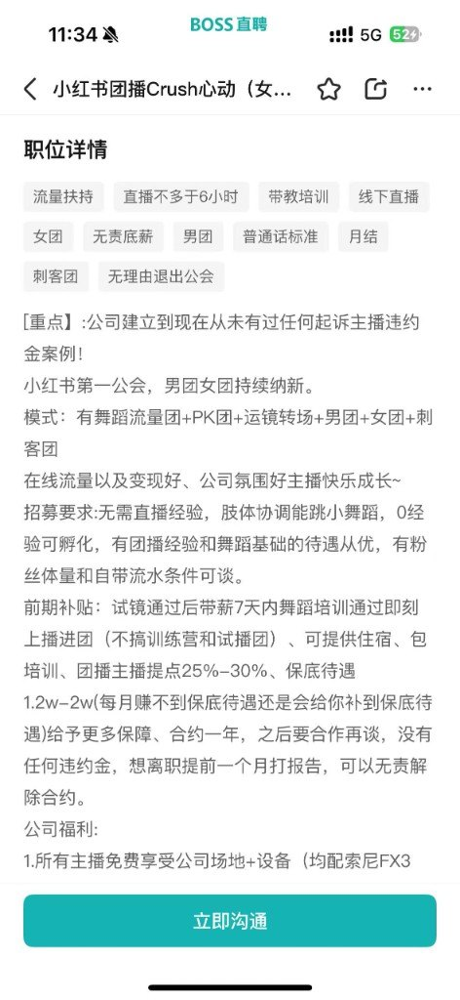
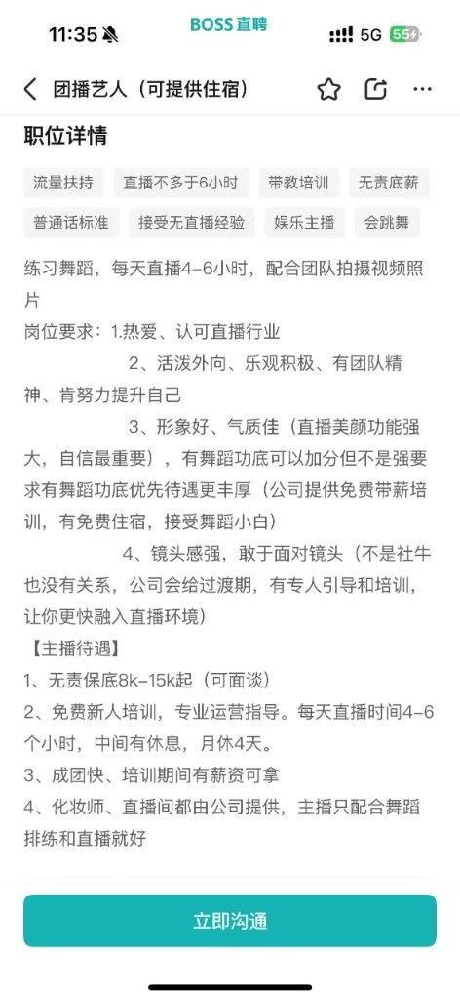
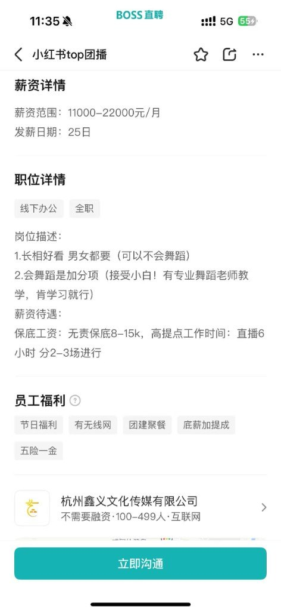
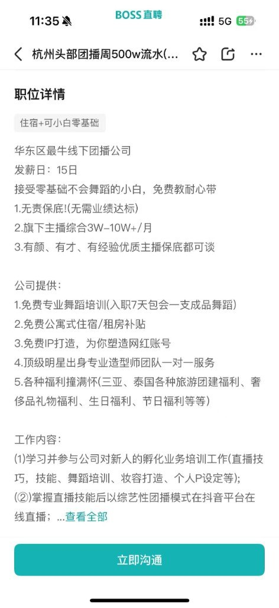
左右滑动查看
这类广告在 58 同城、BOSS 直聘、抖音私信、快手的评论区到处都是。话术高度统一，瞄准的人群也高度统一。真正让你停下来的，是“包食宿”那三个字。你刚到杭州，房租吃饭通勤样样烧钱，整座城市没一个熟人。对这时候的你来说，食宿两个字比什么月入过万的“画饼”实在得多。
然而你不知道的是，MCN 机构比你更清楚这三个字的分量。一旦住进公司宿舍，你的住所、饮食、收入、社交……生活的一切都跟这家机构死死捆在了一起。一个在城里没有退路的女孩，遇到了不公平的事也几乎没有还价的底气。
面试简单到让你意外。没人问学历，也没人在意你的直播经验。运营让你对着镜头笑笑，说几句话，转个身，几分钟后便通过了。你觉得自己运气好，殊不知你只是刚好落进了这张大网里：18 到 25 岁女性，外形中等偏上，高中到大专学历，大多来自三四线城市或农村——这是团播机构最喜欢的新人主播群体。
接下来的几天时间里，你接受了一套高度标准化的培训。话术课教你怎么在三秒内嗅出一个肯花钱的用户；PK 课上你学的是落后时怎么卖惨博同情，领先时又如何乘胜追击。几天培训结束后，你上岗了。
一个标准的团播基地配了三到六个直播间，每个直播间三到六个人交替出镜。一旁的监控室里，运营人员同时盯着几十块屏幕，戴着耳机，靠内部对讲系统给你们发指令。
运营指挥 · 实时对讲
三号机位弹幕有人问！
二号 PK 快输了，四号帮拉票！
一号机那个大哥进来了，所有人喊名字！
直播间里的热闹场景没有多少是自然发生的，每一句互动都是实时计算的结果。
运营面前的屏幕跳动着冰冷的数字：在线人数、弹幕速度、礼物收入、用户停留时间、PK 胜率。这些数据被后台实时汇总，自动排出名次。名次靠前的人能够进入晚上十点到凌晨两点的黄金档，而名次往下掉的，则会慢慢被挪出核心直播间，挪到冷门时段，最后从排班表上彻底消失。在这里，衡量一切的指标只有产值。
一个月后，你终于看到了工资条。很幸运，你这个月所在的直播间做了三万元流水。
然而，你将亲眼看着它一层层变薄。
第一刀是平台。不同平台的抽成比例各不相同。抖音以 50% 的平台抽成位居榜首，但其庞大的流量池吸引了最多的 MCN 机构和主播。快手和小红书给主播留出了 70% 的空间，但流量规模明显不及抖音。B 站和视频号作为后来者，分成比例相对温和，但团播生态尚不成熟。算法把你推到更多人面前，也把更多人兜里的钱推到你面前，这笔钱是你站在流量池里的门票。


第二刀是机构。剩下的一万五，合同里白纸黑字抽走大约四分之一。你所使用的直播间、设备、投流预算……所有这些成本都写进了你的分成条款。
第三刀是各种扣款。迟到一次两百，PK 任务没完成一千，直播间被警告一次五百。这些条目缩在合同附件的犄角旮旯，当初你签的时候根本没注意。七七八八加起来，又是几百几千。
三万块，最后变成七千两百五。换算成时薪，每月直播约 200 小时，时薪约为 36 元。如果再算上化妆准备、通勤、培训、例会等非直播工作时间，时薪进一步降至不足 30 元。而一个在杭州送外卖的骑手，时薪也可达到 35–45 元的区间。


你坐在宿舍床上反反复复算了好几遍，总觉得是自己算错了。
但这个数字已经是团播行业前 15% 的水平。跟你同批进来的大多数新人主播的月流水在五千到一万五之间，按同样的缩水比例，到手通常只有一千五到四千块。现在的你理解了为什么数据说 95.2% 的团播主播月收入不到五千。与努力无关，从分成模式形成的第一天起，二八定律下，底部的人就注定分不到大蛋糕。

此时的你选择离开。而在你身后，机构已经挂出了新的招聘广告。宿舍里，你的床位还没凉透，下一个满怀憧憬女孩已经站到了门口。
机器不停，流水线上的原材料总是不缺的。

第三章 牢笼・屏幕之内的生存现实
透过数据，我们看到了一个在时代风口高速发展的行业，市场规模不断扩大、商业模式愈发成熟、MCN 机构遍布全国。但这些数据并没有讲述这个行业里“人”的故事。屏幕里展示的，是观众习以为常的活力、热闹与光鲜亮丽，但其背后，是多数团播从业者们不堪的生存现实。

工作日记录
团播行业生态中，主播、运营、舞蹈老师等不同岗位彼此衔接，共同支撑着一场直播的顺利完成。每个人的工作内容各不相同，但他们都拥有一个共同点——昼夜颠倒地拼搏。我们在社交媒体平台追踪观察了多位团播从业者公开分享的工作经历，整理了三个典型岗位的一日时间线。（点击可切换查看）


收入真相
高收入，是团播行业最具吸引力的标签，也是最大的误解之一。根据《中国网络表演（直播与短视频）行业发展报告》，直播行业收入呈现出明显的“金字塔”结构，月收入 5000 元以下的主播占比高达 95.2%，而月收入超过 10 万元的头部主播仅占 0.4%。团播同样遵循着这一逻辑。


95.2% 的团播主播月收入不足 5000 元
签约与约束
工作强度和收入差距只是团播行业的一面，真正让许多主播难以抽身的，是镜头之外那一纸合同。直播时长、出勤天数、违约责任、账号归属、竞业限制、表情管理制度等条款共同构成了一套完整的约束体系。当直播逐渐成为一种流水线式的内容生产，合同约束的早已不仅是从业者的工作本身，更约束着他们的职业选择与个人生活。

职业生命周期
在这条高速运转的“流水线”上，主播的职业生命周期远比想象中短。根据 CAPA 行业报告，40% 的主播在入行三个月内便退出行业，一年后仍留在岗位上的只剩三成，而能够坚持两年以上的人不足 5%。

典型案例
为洞见团播生态中具体的“人”，我们接触并采访了三位不同阶段的从业者。她们进入团播的起点并没有太大差异，但在数月甚至数年的职业历程之后，却走向了截然不同的人生轨迹。
点击可查看详情

第四章 镜子・被照见的争议与未来
走出直播间，关于团播的讨论才真正开始。随着行业规模不断扩大、年轻从业者不断涌入，团播已不再只是屏幕里的娱乐狂欢，更催促着人们反思其中的数字劳动、行业风险、治理监管和 AI 时代变局等一系列现实议题。此时的屏幕像一面镜子，照见整个行业的争议与未来。
隐形工伤
情绪劳动带来的心理损耗，正成为团播行业中最值得关注的“隐形工伤”。与传统意义上的体力劳动不同，团播主播的工作要求她们不断输出热情、活力与亲近感。无论当天的身体状态如何、情绪是否低落，只要镜头亮起，她们都需要保持微笑、回应互动、调动直播间氛围。这种将个人情绪纳入工作内容，并持续进行管理和表达的过程，被称为情绪劳动（Emotional Labor）。这种长期高频的情绪输出，让不少从业者受了“工伤”。相比身体疲劳，它没有明显的伤口，却会以焦虑、失眠、情绪耗竭等形式不断累积。

行业风险
近年来，主播与 MCN 之间的合同纠纷不断增加，高额违约金、漫长的诉讼程序和极低的胜诉率，共同构成了团播行业最现实的风险。新人主播平均月收入约 5000 元，而合同中的违约金却往往高达数十万元，两者之间形成近 200 倍的落差，收入与赔偿严重倒挂。


统计显示，在主播合同纠纷中，机构胜诉占 97%，主播实现无责解约的比例仅约 3%。进一步分析那些少数胜诉案件会发现，主播获得法院支持，多与机构拖欠收益、停止履约、劳动关系认定等情形有关，而非合同本身被认定无效。


治理与监管
在团播行业发展过程中，诱导打赏、低俗内容、MCN 管理等问题始终争议不断。对此，国家监管部门频频出手。从整治打赏乱象、规范直播内容，到加强 MCN 治理、完善主播权益保障，政策不断回应行业发展中的新问题，为团播行业划定更加清晰的发展边界。

AI 时代的新变局
当真人主播面临培养成本高、管理难、职业流动性强等现实问题时，AI 正成为团播的新选择。2025 年底，已有头部 MCN 开始批量部署 AI 虚拟主播以求降本增效，团播生态中其他工作也开始被技术覆盖。对于团播从业者而言，这既是解脱，也是更深层的危机。
未来，行业面临的挑战或许不再只是如何规范直播、保障权益，而是如何应对技术变革带来的就业冲击，以及重新寻找人与技术之间的平衡。
技术
影响
AI 虚拟主播
→
24h 不间断，不会累 / 不涨薪 / 不违约，可同时开播 1000 个房间
AI 互动引擎
→
智能弹幕回复、情绪识别，接手运营工作
AI 内容生成
→
自动调整话术，生成个性化「卖惨故事」
「测一测」你适合做团播主播吗？
请按 1–5 分自评（1 = 完全不能接受，5 = 完全可以接受）
1. 每天对着镜头微笑 8 小时以上？
2. 凌晨 3 点才下班，作息长期颠倒？
3. 只有 5 个观众时仍保持高昂情绪？
4. 收入主要取决于陌生人的打赏意愿？
5. 面对恶意弹幕仍需保持微笑回应？
6. 社交关系很大程度上由公司管理？
7. 入行 3 个月收入可能不足 3000 元？
0


结语
屏幕是 21 世纪最伟大的发明之一。它连接了彼此，打破了距离，创造了前所未有的可能性。但在团播这个行业里，屏幕呈现出一个更复杂的面貌，它既是通往梦想的窗口，也是禁锢自由的栅栏；它既让无数年轻人被看见，也让他们在被看见的过程中，一点一点地失去了自己。
当屏幕成为越来越多年轻人赖以生存的“生产资料”，我们更应该关注的，是屏幕那端一个个真实的人。他们不是可以随时替换的像素点，不是算法中的一个流量节点，更不是增长曲线上的一个数字，而是一个个怀揣梦想、付出劳动、值得被尊重的“人”。
愿有一天，他们不必再困于屏幕之中，而是能够被屏幕真正照亮。